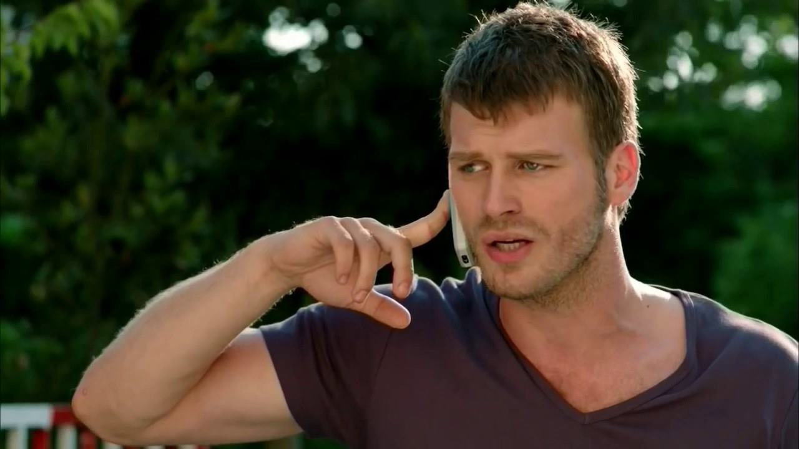

Merhaba ben Muhammet. Antalyalım. Bilgisayar mühendisliği 3. sınıf öğrencisiyim. Bu bölümü uzun zamandır istiyordum. Küçükken donanıma ilgim vardı sonrasında pandemi zamanı lise 2 de yazılıma başladım. C# ile başladım basit- orta şeyler yaptıktan sonra üniversite sınavından dolayı çok zaman ayıramadım. Sınavdan sonra Javaya başladım. Java ardından OOP ve Spring Frameworkle backend projeleri ile kendimi geliştiriyorum. Bunun yanında backend alanında kullandığımız teknolojileride öğreniyorum. Hedefim ilerde güzel bir şirkette backend veya full stack developer olarak çalışmak istiyorum.
